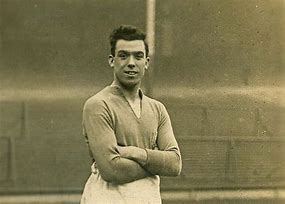
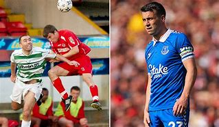
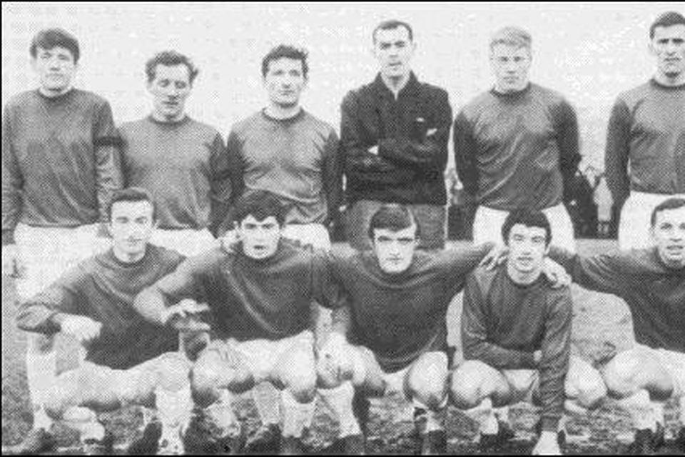

Born in Birkenhead, he began his career at his hometown club Tranmere Rovers, before moving on to Everton, the club he had supported as a child. A prolific goalscorer, he was particularly known for having a penchant for scoring goals with his head, courtesy of his elevation and athleticism, as well as his powerful and accurate heading ability, which has led pundits to describe him as one of the greatest aerial specialists of all time. Dean played the majority of his career at Everton, before injuries caught up with him and he moved on to new challenges at Notts County, and eventually Sligo Rovers. In Everton's league championship-winning season of 1927-28, Dean scored a record 60 league goals (out of the team's 102), having played in 39 of Everton's 42 games. That season, he also made his debut for England: he went on to score eighteen goals in sixteen appearances for his country. A statue of Dean was unveiled outside Goodison Park in May 2001. A year later, he became one of 22 players inducted into the inaugural English Football Hall of Fame. At age 32, Dixie Dean signed for Irish club Sligo Rovers in January 1939 to help the club in their FAI Cup campaign. On his arrival, the railway station in Sligo was said to be filled with locals trying to catch a glimpse of him. Dean scored ten goals in seven games for the club, including five in a 7-1 win over Waterford (which remains a club record for the most goals scored in a single game). He also played in four Cup matches, scoring once (in the 1-1 final against Shelbourne, who won the replay 1-0). Dean's runner-up medal was later stolen from his hotel room; on a return trip to Ireland to watch Rovers 39 years later in the 1978 FAI Cup final, a package was delivered to his hotel room with the medal inside. He is considered a legend at The Showgrounds and is featured in the club's outdoor museum. Read more about Dixie Dean here...
Seamus Coleman

Originally a Gaelic footballer, Seamus Coleman started his association football career with his hometown club St Catherine's in Killybegs, Donegal. Coleman was spotted by Sligo Rovers when he lined up against them in a friendly for St Catherine's. He made his League of Ireland debut against Derry City at the Brandywell in October 2006 as a substitute for Adam Hughes. Sligo Rovers coach Rob McDonald did not rate Coleman very highly as a player, telling him that he should join League of Ireland First Division club Finn Harps. McDonald departed Sligo Rovers in March 2007, and was replaced by Paul Cook, of whom Coleman later said: "He made me feel like I was the best player in the League. It just makes such a difference when you have a manager who believes in you". Coleman scored his only goal for Sligo against Bray Wanderers on 17 May 2008, concluding a 3-0 win. He then made the move to England to sign for Everton in January 2009 for a £60,000 fee, which is regarded by many as the biggest bargain in football. In 2010, he spent half a season on loan with Blackpool, helping them win promotion via the Championship play-offs, before returning to Everton where he has made over 400 appearances. Coleman has been a senior international for the Republic of Ireland since 2011, acquiring over 70 caps. He won the 2011 Nations Cup and was awarded the FAI Under-21 International Player of the Year in both 2009 and 2010. He was selected for the Ireland squad at UEFA Euro 2016, captaining Ireland against both Italy and France. He was named the new Ireland captain in September 2016 following Robbie Keane's international retirement. Read more about Seamus Coleman here...
David Pugh

David Pugh is one of Sligo soccer’s most iconic heroes. A local centre-half who joined Rovers from the junior soccer ranks, he is generally regarded as one of the best players ever to wear the bit’o’red and, indeed, one of the greatest of all time League of Ireland performers. He also managed Rovers on two separate occasions. His remarkable career included an FAI Cup winner’ medal with Shamrock Rovers in 1969 and a successful spell in the fledgling American soccer leagues. But his best years were spent as an inspirational skipper with his home-town club, during which he was honoured with the captaincy of the Irish under-23 team. A master of many trades, David also played senior Gaelic football for Sligo; was an international basketball player; an accomplished rally driver, and a top amateur golfer. He was offered the chance to play professional football, but turned down opportunities to join both Celtic and Chelsea. All Pugh ever wanted was play for Sligo Rovers. His uncle, Ray Foley, had brought him to the Showgrounds every Sunday and soon he was caught up in the frenzy which envelopes almost every Sligo town child who ever kicked a ball. As a teenager, he played for Collegians in the junior league and was good enough to win an Irish junior cap. It was only a matter of time before the senior club came calling, but it was an inauspicious start. One of the better days, however, was when he got the chance to share a field with the fabulous Pele, winner of three World Cup medals and acknowledged as the best player in the world. Pugh was midway through a one-year contract with Boston Beacons, who faced Pele’s club, Santos, in an exhibition game. It still feels slightly surreal: “I was casually told ‘you pick up Pele’, and I thought ‘yeah, no problem’. Just to be on the same pitch was such a thrill. All of the Santos players were Brazilian internationals, fabulous players. I would have paid in to see them and here I was on the same pitch, trying to keep Pele quiet. I actually won a few headers from him, but even to get close to him was hard enough. “The one regret is that I didn’t get his shirt. Our manager ran on after the match and grabbed it. I’ve never forgiven him for that.” Later in his career, he would serve as Rovers manager for two separate spells, while more tangible success as a coach came during his 28 years as a PE teacher at Summerhill College, where his teams won 18 Connacht titles and five All-Irelands. More than a dozen of his proteges went on to play in the League of Ireland and further afield. Read more about David Pugh here...